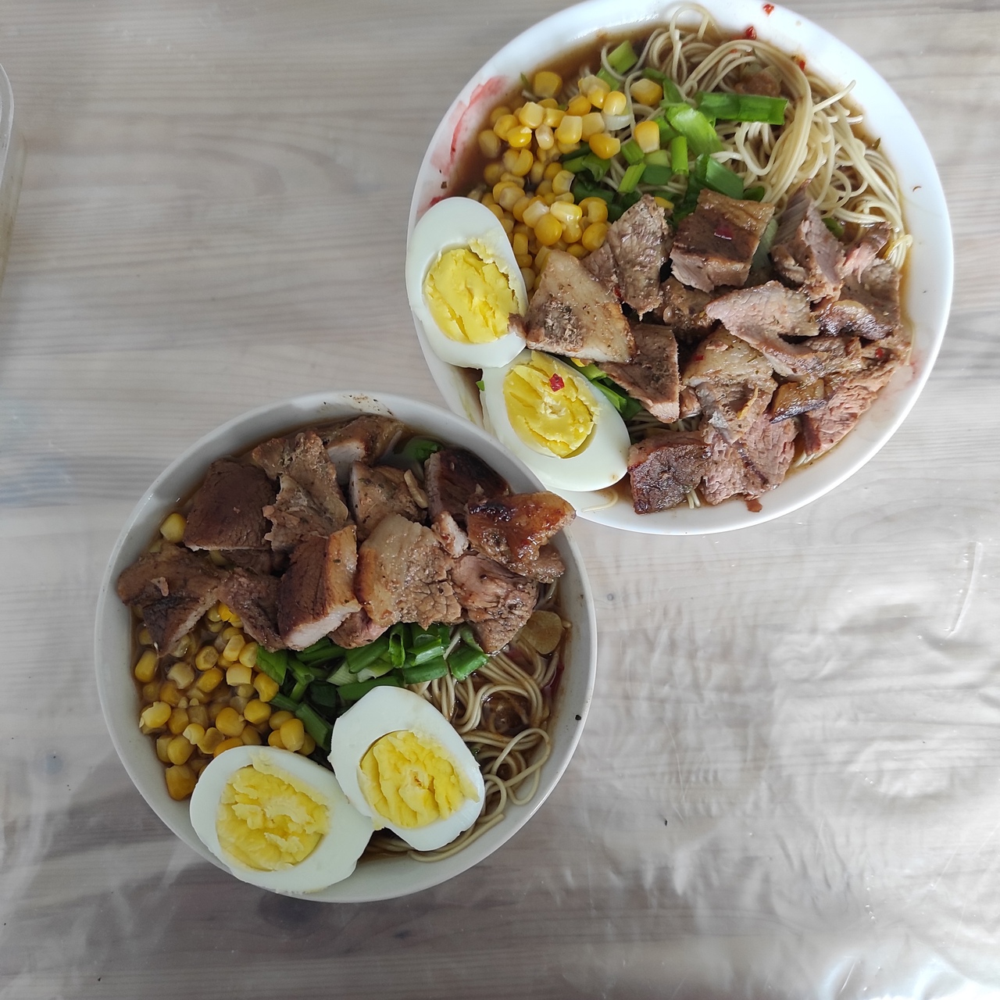

Ramen

Description
I absolutely dig Japanese cutlure. And I also like cooking, so when the
two collide, my mind gives birth to something beautiful like the picture
above.
Preparation time: 20 minutes (if you also want to marinade your meat,
take those hours into account)
Cooking time: 20 minutes
Ingredients
- 400 grams of ramen noodles
- 4 pork chops or 4 chicken breasts
- Honey
- Soy sauce
- 3 garlic cloves
- Chinese 5 spices (if you happen to live in Russia, you can use
Kotanyi Азиатская кухня)
- Hot chili pepper (as spices or fresh, kinda optional)
- 4 boiled eggs (optional)
- Worcestershire sauce (optional)
- Sweet corn (optional)
- Dried nori sheet (optional)
- Green onion (optional)
Steps
- If you're going to marinade the meat, then use spices, garlic,
ginger, soy sauce and honey for it. The trick here is to reuse the
marinade for the broth later
- If you don't have time for the marinade, then just pour in
everything I mentioned in the previous step into the kettle and
bring it to the boil
- Add a pinch of sugar and more spices to taste
- While you wait for the spices in the broth to open up, start hard
boiling some eggs
- Start frying the meat, around 5 minutes on each side
- Cook the noodles as per1 packet instructions
- Once noodles are ready, separate the noodles into 4 bowls evenly
- When the meat is cooked and eggs are boiled, start putting the
broth, toppings, and meat into each bowl. The image above might help you